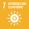

BE01: Renewable Energy
Energy is from renewable sources
1. Ambition
A Future-Fit Business ensures that all the energy it consumes – as electricity, heat or fuel – is derived from renewable energy sources: solar, wind, ocean, hydropower, geothermal resources, and biomass.
1.1 What this goal means
There is no longer any doubt that the systematically increasing concentration of greenhouse gases (GHGs) in the atmosphere resulting from the burning of fossil fuels is contributing to climate change and ocean acidification. Further, ever-riskier fuel extraction methods, including shale gas fracking and Arctic drilling, cause disproportionate disruption to the environment.
By ensuring energy comes from renewable sources, companies do not contribute to the demand for fossil fuels and their associated emissions, nor to the over-harvesting of resources such as oil whose value to society extends far beyond combustion.
To be Future-Fit, a company must ensure that all the energy it consumes – as electricity, heat or fuel – is derived from renewable energy sources: solar, wind, ocean, hydropower, geothermal resources, or biomass.
1.2 Why this goal is needed
As with all Future-Fit Break-Even Goals, a company must reach this goal to ensure that it is doing nothing to undermine society’s progress toward an environmentally restorative, socially just, and economically inclusive future. To find out more about how these goals were derived based on 30+ years of systems science, see the Methodology Guide.
These statistics help to illustrate why it is critical for all companies to reach this goal:
- The benefits of burning fossil fuels come at a high cost to the environment. A molecule of CO2 generated by burning fossil fuels will, in the course of its lifetime in the atmosphere, trap a hundred thousand times more heat than was released in producing it. [23]
- The climate is already changing rapidly. The planet’s average surface temperature has risen about 1.1°C since the late 19th century. Most of the warming occurred in the past 35 years, with 16 of the 17 warmest years on record occurring since 2001. Not only was 2016 the warmest year on record, but eight of the 12 months that year were the warmest on record for those respective months. [24]
- The business models of fossil-fuel derived energy providers will become redundant as stringent climate policies come into force. For example, between 60-80% of coal, oil and gas reserves of publicly listed companies are ‘unburnable’ if we are to have a chance of not exceeding a 2°C rise in global average temperatures. [25]
1.3 How this goal contributes to the SDGs
The UN Sustainable Development Goals (SDGs) are a collective response to the world’s greatest systemic challenges, so they are naturally interconnected. Any given action may impact some SDGs directly, and others via knock-on effects. A Future-Fit Business can be sure that it is helping – and in no way hindering – progress towards the SDGs.
Companies may contribute to several SDGs by only sourcing renewable energy, and actively encouraging their suppliers to do the same. But the most direct links with respect to this goal are:
| Link to this Break-Even Goal | |
|---|---|
 |
Support efforts to increase the share of renewable energy in the global energy mix; and, to promote investment in clean energy research, technology and infrastructure. |
 |
Support efforts to integrate climate change measures into company policies. |
2. Action
2.1 Getting started
Background information
The backbone of today’s economy is the combustion of fossil fuels, from electricity generation through to global transportation. Every aspect of modern life in the western world depends to some degree on the combustion of fossil fuels. The total elimination of fossil fuels in favour of renewable alternatives is a major systemic challenge, and should be an aspiration to inspire stakeholders and guide decision-making.
A company should examine the energy inputs used across its operations to understand when and how it uses energy, as well as identifying its existing energy provision arrangements. The business can then start to measure and manage its energy mix, from negotiating new energy contracts through to pursuing its own creation of renewable energy through appropriate means.
Questions to ask
These questions should help you identify what information to gather.
Does the company know how its energy is obtained and used?
- What are the company’s key energy sources (e.g. electricity, petrol)? Where and how is this energy being used, and is it purchased or produced by the company? Energy uses might include but are not limited to the following:
- Energy consumed in the creation of physical products;
- Energy consumed by buildings and equipment, whether owned or leased (e.g. lighting, heating and computers);
- Energy consumed by transport vehicles that the company owns or leases; and
- Any other energy that the company consumes to conduct its business.
- Does the company have systems in place to manage and monitor its energy usage?
Does the company have a formal approach to energy sourcing?
Does the company actively and regularly manage and negotiate energy procurement from external suppliers? Would actively seeking to purchase or produce renewable energy be aligned with current energy procurement policies?
Do the appropriate employees understand the necessity of pursuing a renewable energy procurement/production strategy? If not, what would need to happen to garner internal support (e.g. completion of a business case or creating an information campaign)? Which approvals are needed to proceed?
Has any public commitment been made to pursue a renewable energy strategy or limit GHG emissions? If there is a strategy to limit GHGs, is there an opportunity to pursue a renewable energy element within this approach?
If there are existing commitments, are they sufficient to improve future-fitness over time? If not, how might they be supplemented or adjusted?
Are any regional operations subject to regulations that may drive the increased adoption of renewable energy (e.g. European Union climate commitments under the 2050 Energy Strategy)?
Has the company undertaken a site review?
- Is the company aware of the energy use profile 12 and energy procurement approach of every site it owns or controls?
- Which sites are using the most energy? Are there sites with energy contracts up for renewal? If the company has leased sites, does it have control of (or could it exert influence over) the procurement of energy at those sites?
- What are the opportunities for each site to pursue the purchase or procurement of renewable energy? Are there opportunities for any existing sites or operational departments to self-generate renewable energy?
How to prioritize
These questions should help you identify and prioritize actions for improvement.
What are the opportunities for the company to make the most significant progress?
- Which sites, departments and activities use the greatest amounts of energy? Small changes to the energy mix in such areas may have a much greater overall effect.
- Which aspects of the company’s operations are in regions where renewable energy is least prevalent? Self-generating, or working towards the integration of renewable energy into the regional power pool, may have a knock-on positive effect for other businesses in the area.
Which steps can the company most easily implement?
- Are there opportunities for any existing sites or departments to self-generate renewable energy? If so, which of these has the shortest payback period?
- Which aspects of the company’s operations are in regions with renewable energy providers? How do costs compare to the company’s current providers, or to the cheapest in-market alternative?
- Are any aspects of the company’s operations in regions with existing, expected or possible regulation that could influence the cost or availability of non-renewable energy, such as carbon taxes or cap-and-trade markets?
Could the company find ways to exceed the requirements of this goal?
- Beyond what is required to reach this goal, is the company able to do anything to ensure that energy is renewable and available to all? 13 Any such activity can speed up society’s progress to future-fitness. For further details see the Positive Pursuit Guide.
The next section describes the fitness criteria needed to tell whether a specific action will result in progress toward future-fitness.
2.2 Pursuing future-fitness
Introduction
Company fitness must be assessed on the basis of total energy use in the reporting period. This includes usage from any company-controlled building, mobile asset (including transport fleets), or service department that uses energy. Note that in cases where energy procurement occurs away from a fixed site, it may be appropriate to evaluate this aspect of operations separately (e.g. a construction company with crews tapping into the local electricity grids, running fuel-powered generators, or using a combination of power sources).
Guidance on how to guarantee that energy consumed qualifies as renewable
To reach this goal a company can apply one or more of the following approaches:14
- Self-generate renewable energy;
- Contract a supplier to generate renewable energy specifically for the company’s use within a company-owned or controlled site;
- Procure renewable energy directly from an energy producer, often referred to as a power purchase agreement (PPA);15 or
- Contract a supplier to match the energy delivered through the grid and consumed by the company with the equivalent production or purchase of renewable energy.16
Note that these approaches exclude the use of unbundled Renewable Energy Certificates (RECs)17 as an acceptable way to make renewable energy procurement claims. This is because such certificates do not accurately reflect the extent to which the company’s procurement spend supports renewable energy generation. [28] For more information, see this frequently asked question.
Guidance on calculating total energy consumption
For each type of energy, total energy consumption must be estimated and converted into a consistent format, so that companies can total their use across all sources (e.g. Joules or Kilowatt hours (kWh)).18 Companies should document the following:
- The method(s) used to determine each energy figure.
- The method(s) used to convert figures into a consistent format.
3. Assessment
3.1 Progress indicators
The role of Future-Fit progress indicators is to reflect how far a company is on its journey toward reaching a specific goal. Progress indicators are expressed as simple percentages.
A company should always seek to assess its future-fitness across the full extent of its activities. In some circumstances this may not be possible. In such cases see the section Assessing and reporting with incomplete data in the Implementation Guide.
Assessing progress
This goal has one progress indicator. To calculate it the following steps are required:
- Determine the total amount of consumed energy during the reporting period.
- Determine the amount of consumed energy that derives from renewable sources.19
- Calculate progress as the percentage of consumed energy that derives from renewable sources.
This can be expressed mathematically as:
\[F=\frac{E_R}{E_T}\]
Where:
| \[F\] | Is the progress toward future-fitness, expressed as a percentage. |
| \[E_R\] | Is the amount of energy consumed that derives from renewable sources. |
| \[E_T\] | Is the total amount of energy consumed during the reporting period. |
For an example of how this progress indicator can be calculated, see here.
3.2 Context indicators
The role of the context indicators is to provide stakeholders with the additional information needed to interpret the full extent of a company’s progress.
Total energy consumed
The absolute amount of energy consumed during the reporting period is required to establish company fitness, and so no additional data or effort is required to calculate this indicator.
For an example of how context indicators can be reported, see here.
4. Assurance
4.1 What assurance is for and why it matters
Any company pursuing future-fitness will instil more confidence among its key stakeholders (from its CEO and CFO to external investors) if it can demonstrate the quality of its Future-Fit data, and the robustness of the controls which underpin it.
This is particularly important if a company wishes to report publicly on its progress toward future-fitness, as some companies may require independent assurance before public disclosure. By having effective, well-documented controls in place, a company can help independent assurers to quickly understand how the business functions, aiding their ability to provide assurance and/or recommend improvements.
4.2 Recommendations for this goal
The following points highlight areas for attention with regard to this specific goal. Each company and reporting period is unique, so assurance engagements always vary: in any given situation, assurers may seek to evaluate different controls and documented evidence. Users should therefore see these recommendations as an illustrative list of what may be requested, rather than an exhaustive list of what will be required.
- Document the methods used to ensure that all operational energy usage has been identified. This encompasses electricity drawn from local utilities and self-generated, as well as fuels (e.g. for heating and company cars). This information can help assurers to assess whether the company’s approach runs the risk of failing to identify any energy usage, which could in turn cause the indicator calculation to be incorrect.
- Document the methods used and sources referenced to calculate the renewable energy mix from providers, allowing assurers to understand and verify the inputs to the indicator calculations.
- The Benchmark provides specific definitions of which energy sources count as renewable for this goal and which sources do not. Check that the classifications used by the company match the Benchmark guidance. Assurers may use this information to identify any inconsistencies used in indicator calculations.
- Document any conversion rates used to translate energy units into a common unit of measurement, and record the sources of those rates, allowing assurers to verify the conversion factors used.
For a more general explanation of how to design and document internal controls, see the section Pursuing future-fitness in a systematic way in the Implementation Guide.
5. Additional information
5.1 Example
ACME Inc. sells lemonade products. Its operations consist of two sites, a bottling plant and an office space. The company powers its office with renewable energy (a total of 20,000 kWh per annum), and its bottling plant is powered by fossil energy (a total of 180,000 kWh per annum).
The company can now calculate its progress as follows:
\[F=\frac{E_R}{E_T}=\frac{20,000}{20,000+180,000}=10\%\]
Context indicator
Total energy consumed: 200,000 kWh
5.2 Frequently asked questions
Should renewable energy be from “responsible sources” only?
Switching to renewable energy allows companies to ensure that they are not contributing to the emission of greenhouse gases and detrimental extraction methods associated with fossil fuels. However, sources of renewable energy may have negative side-effects, too. For example, run-of-the-river hydroelectric power is more responsible than that derived from mega-dams, which can cause significant environmental and social collateral damage. Similarly, solar arrays on rooftops or barren lands are likely to be more responsibly situated than solar farms on land which could otherwise be used to grow crops.
Given the complexity of interpreting what "responsibly sourced" means for every type of renewable energy – coupled with the practical difficulty of tracing whether every joule of purchased energy derives from such a source – there is no straightforward answer to this question. That said, insofar as a company can choose between renewable sources, and insofar as it can determine the adverse side-effects of each, it should always seek to use whichever option is least problematic.
What is included within biomass?
Biomass is defined as living or recently dead organisms or by-products of organisms. The energy stored in biomass can be released to produce renewable electricity or heat. [29] Any fuel derived from biomass is known as a biofuel. There are three generations of biofuels. First generation biofuels are derived from biomass that could be used as a food source. Examples include sugar, starch and vegetable oil. Second generation biofuels are derived from non-food feedstocks. Examples include waste vegetable oil, forest residue and industry residue. Third generation biofuels are also known as ‘algae fuel’ as they are derived from algae. Third generation biofuels are considered the most beneficial, as the algae absorbs carbon dioxide from the atmosphere and does not compete with crops for land use. [30]
Why is energy from waste not considered a renewable energy source?
Residual waste often contains a mix of biogenic materials like food waste and scrap wood, as well as materials from fossil sources such as plastics. Energy recovered from such waste is only considered to be partially renewable. Given the complexity of knowing what this percentage is for any given source, it is assumed to be non-renewable for the scope of this goal.
What are unbundled Renewable Energy Certificates and why are they not acceptable?
In a Future-Fit Society Energy is renewable and available to all. One implication is that in such a future, no GHGs will be emitted into the atmosphere as a result of the generation, distribution and use of energy.
We are a long way from realising this ambition. A great number of useful frameworks, initiatives and market instruments exist to guide the transition of our energy systems, but not all of them – however well intended they may be – drive meaningful progress.
This is because energy markets are particularly complex – not least as the energy purchased by a business is often not the same energy that it actually consumes. Even if a company chooses a renewable tariff, the carbon intensity of the energy it physically receives depends on the average energy mix of the grid supplying it. So, the level of GHG emissions attributed to a company’s payments is rarely the same as the actual emissions that occur as a consequence of its consumption.
So how can we fairly account for the ‘true’ GHG emissions associated with a company’s purchased energy consumption (often referred to as Scope 2 emissions)?
Critiques of the market-based method
Many leading frameworks and initiatives allow an attributional approach, referred to as the market-based method of GHG accounting.
The market-based method applies emission factors20 based upon the financial contracts a company has for purchasing electricity (and not the emission factors of the electricity which is actually supplied to them). This permits a company using Renewable Energy Certificates (RECs) or other contractual arrangements21 to claim its electricity consumption does not cause any GHG emissions – and thereby report that is has reduced emissions.
What are Renewable Energy Certificates?
When an energy facility generates renewable electricity, it is awarded an electronic Renewable Energy Certificate, or REC. One REC acknowledges that 1 MWh of renewable energy has been produced and delivered to a distribution grid somewhere. RECs can be bought and sold. The actual electricity generated and the associated REC exist independently, and are effectively two distinct products with different revenue streams and different values. A REC that is sold or purchased separately from electricity is known as an unbundled REC.22
Whenever a company purchases (or ‘retires’) a REC, it is taken out of circulation, and the company can claim the associated environmental benefit it relates to. This means that a company which purchases 500 MWh of electricity generated from coal can (according to many standards) claim to be 100% powered by renewables, if it also buys 500 RECs. [32]
A core assumption that underlies the ‘acceptability’ of using RECs to reduce Scope 2 GHG emissions is that the aggregate demand for RECs will increase investment in more renewable energy generation, thereby displacing demand for GHG-intensive energy (i.e. from fossil fuels). If this assumption were valid, we would be able to rely on REC demand to influence the composition of energy supply, and thus gradually contribute to a reduction in overall GHG emissions.
However, this assumption does not hold up in practice. Empirical evidence shows that demand for voluntary market RECs23 does not influence supply. That’s because the amount of renewable energy MWh generated significantly exceeds the market demand for purchasing the associated RECs. In other words, the sale of RECs to consumers for the purpose of making green power purchase claims does not actually affect the type of energy that is being generated, sold, and used across the grid. [33] [28] [34]
As a result, critics argue that the market-based approach is neither accurate nor useful. [35] This argument is neatly illustrated through the following hypothetical example:
“Company A purchases contractual emission factors for all of its consumed grid electricity, and reports a Scope 2 value of zero (0) tCO2e in its supply chain reporting, and also a 30% reduction in its overall corporate emissions, as a result of this newly claimed zero rating of its Scope 2 emissions. By contrast, the otherwise identical Company B does not purchase contractual emission factors, instead using the equivalent money to implement an energy efficiency programme that reduces its electricity consumption and Scope 2 emissions by 10%.
Climate-friendly consumers and investors use the GHG reports from the two companies to inform their purchasing and investment decisions, and favour Company A as it appears to exhibit superior environmental performance. However, Company A’s consumption of grid electricity is unchanged, its purchase of contractual emission factors has not increased the amount of renewable generation, and therefore its actions have not reduced emissions to the atmosphere. In contrast, Company B has reduced its demand for grid electricity, some of which is supplied by fossil fuel power stations, and therefore has credibly reduced emissions to the atmosphere.” [28]
Because of the above concerns, critics of the market-based method argue that companies should not use it to quantify their emissions. In contrast, proponents of the market-based approach argue that it is a useful mechanism through which a company can signal its intention to support renewable energy generation.24 [36]
The key purpose of the Future-Fit Business Benchmark is to drive meaningful change, so given the evidence that RECs often do not achieve real GHG reductions in today’s markets, they are not here considered an acceptable way to make renewable energy claims.
Bibliography
See for example The Union for Concerned Scientists’ reflections on biomass as energy.↩︎
An energy use profile shows how much energy is being used over a given time, how the energy is being used, as well as where that energy is being sourced from throughout the period.↩︎
This is one of the eight Properties of a Future-Fit Society – for more details see the Methodology Guide.↩︎
These approaches are in line with the requirements of the corporate leadership initiative RE100, with one notable exception: the purchase of unbundled Renewable Energy Certificates is not considered an acceptable approach here (see footnote 7). [26]↩︎
A PPA is a long-term contract between a renewable energy producer and a buyer, where the buyer agrees to purchase energy for a fixed price during the lifespan of the contract.↩︎
For example, a company could purchase electricity from a supplier that commits to buying a unit of electricity directly from a renewable generator for every unit it sells to the company.↩︎
From the US EPA: Unbundled Renewable Energy Certificates (RECs) refer to RECs that are sold, delivered, or purchased separately from electricity. RECs provide no physical delivery of electricity to customers and as such the customer is purchasing power from a separate entity than the one selling them the REC.” [27]↩︎
For information on how to do this see, for example, the Energy Information Administration.↩︎
If the energy source cannot be reasonably ascertained, it cannot be confirmed as renewable, and therefore should be recorded as non-renewable for the purpose of this assessment.↩︎
An emission factor can be defined as: the average emission rate of a given GHG for a given source, relative to units of activity. [31] Examples include kg CO2e per kilometre driven, or kg CO2e per kWh generated.↩︎
For simplicity, hereafter we use the term REC to also include other similar contractual instruments.↩︎
From the US EPA: “Unbundled Renewable Energy Certificates (RECs) refer to RECs that are sold, delivered, or purchased separately from electricity. [They] provide no physical delivery of electricity to customers and as such the customer is purchasing power from a separate entity than the one selling them the REC.” [27] In contrast, a REC is bundled if it is sold together with the associated electricity.↩︎
In many jurisdictions there are two markets for RECs – a compliance market and a voluntary market. Compliance markets are designed for electric power utility companies to trade RECs, in order to meet government-mandated renewable energy targets. In contrast, voluntary markets are designed for individual energy consumers (such as companies) to buy and sell RECs.↩︎
Advocates of RECs claim that they serve to raise interest among both suppliers and consumers in market-based solutions, and rejecting the approach in its entirety risks discouraging them.↩︎